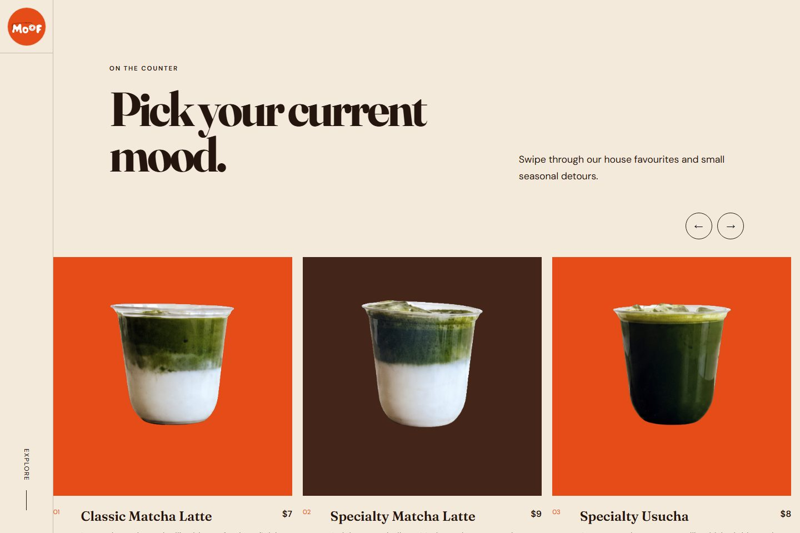
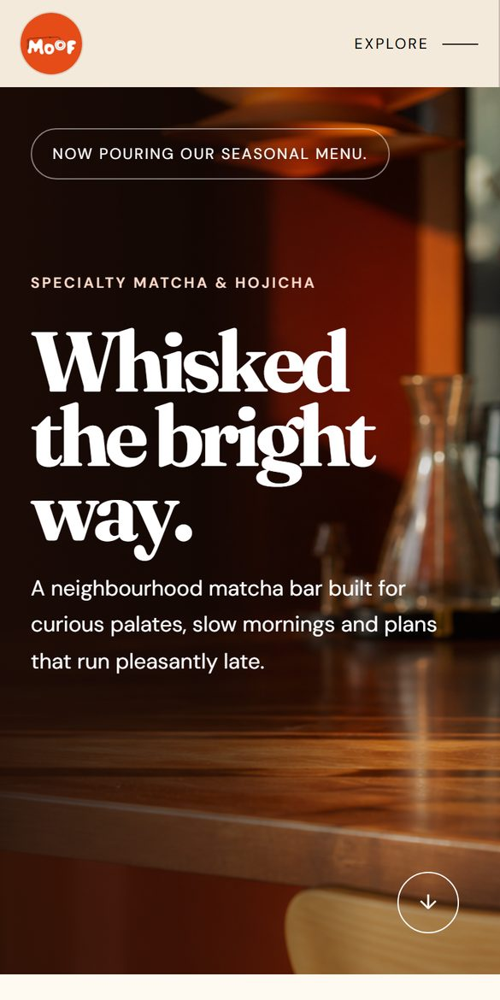
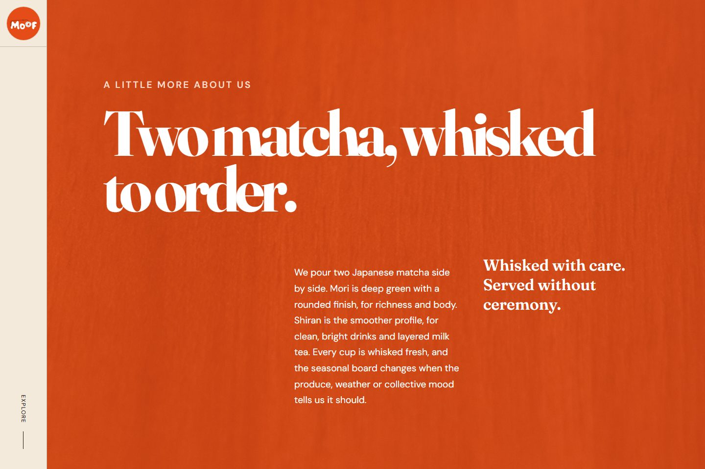

02 / 04
Brand · Web · Content system
Moof
Giving a small matcha bar a digital presence with room to become itself.




Matcha & hojicha · Shenton Way
The brief
Build a distinctive hospitality site without locking a young brand into the wrong expression.
- 6
- complete directions explored
- 1
- chosen and shipped
- 2
- content files run the site
The decisive move
Instead of polishing one safe concept, we built six complete directions against the same real content. The owner chose by using them, not by reading a deck—so the winner shipped as the site and the other five were retired.
Read the build story
Challenge
New brands need conviction before they have certainty.
The experience had to feel considered, local, and tactile while keeping the menu, imagery, hours, and story straightforward to update.
Approach
A live bake-off, then one confident direction.
Six Astro variants shared one content model. Design F won: bold serif type, warm counter photography, a swipeable drinks rail, and a quiet side navigation.
Outcome
A fast static site the owner can run.
Design F now lives at the site root. Copy, drinks, prices, and pictures sit in two content files that the team edits visually through Website Manager.